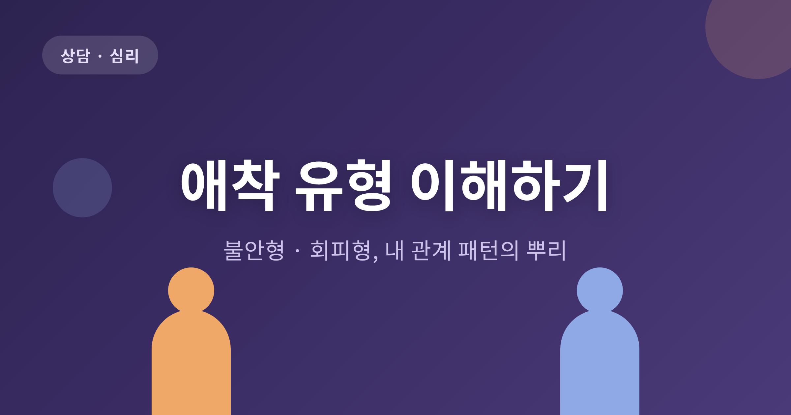
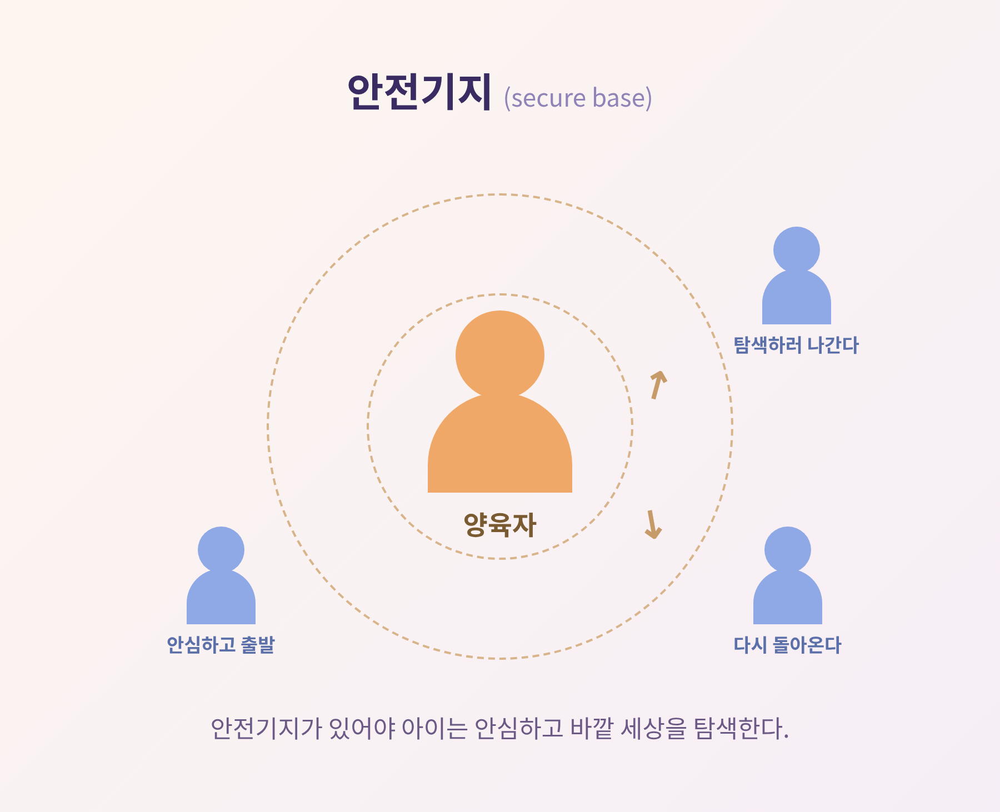
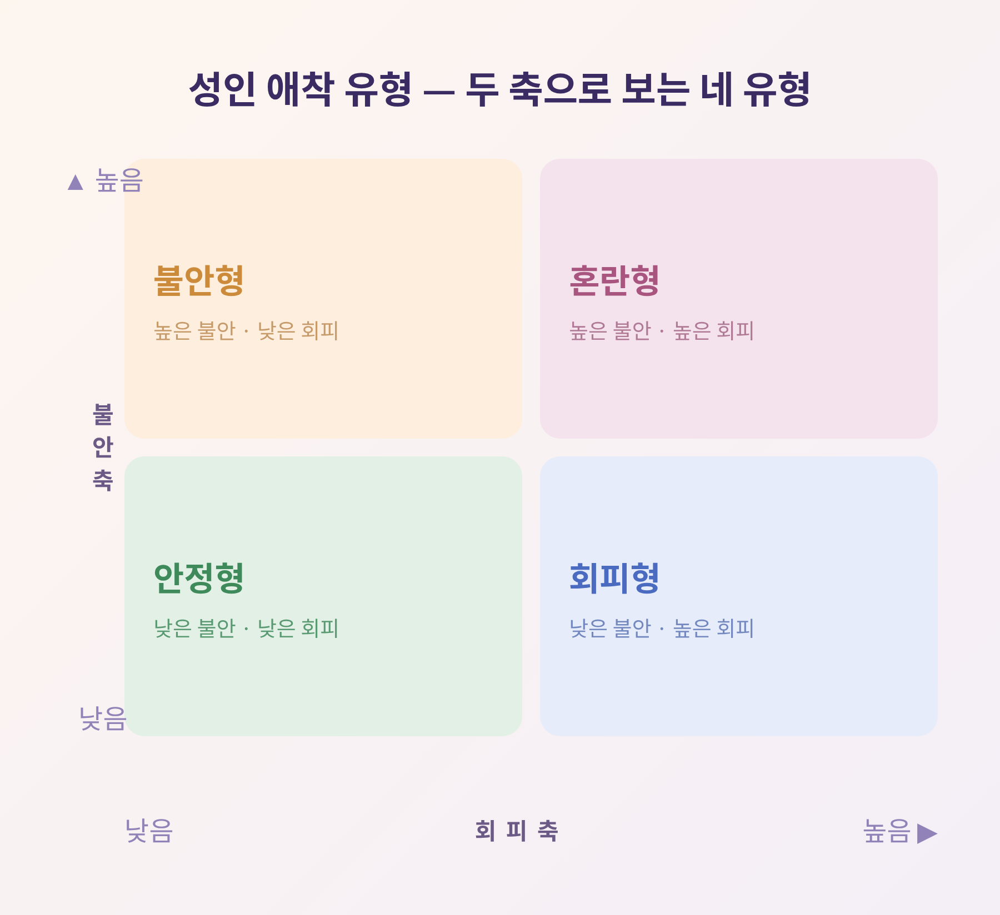
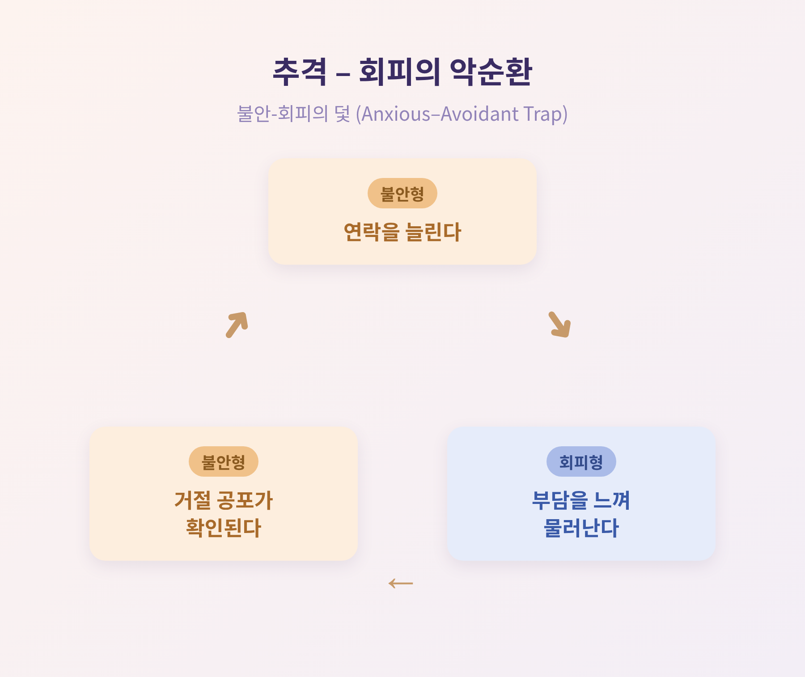
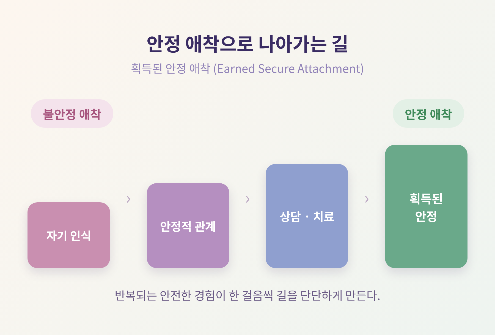

오늘은 애착 유형에 대해 이야기해 보려 합니다.
누군가와 가까워지면 불안해지는 사람이 있고, 반대로 가까워질수록 거리를 두고 싶어지는 사람이 있습니다. 이 글은 그 차이가 어디서 오는지, 불안형과 회피형이라는 패턴의 뿌리를 차분히 정리한 것입니다.
먼저 짧게 결론부터 말씀드리면 이렇습니다. 애착 유형은 어릴 적 관계 경험에서 만들어진 마음의 습관이며, 낙인이 아니라 이해의 출발점입니다. 그리고 무엇보다 — 바뀔 수 있습니다.
애착이론의 창시자는 존 볼비입니다.
그는 인간에게 여러 행동 체계가 내재되어 있다고 보았습니다. 그중 가장 중요한 것으로 영아의 애착 체계, 탐색 체계, 그리고 성인의 양육 체계를 꼽았습니다.
볼비의 이론에 실증적 근거를 더한 사람은 메리 에인스워스입니다. 그는 우간다와 볼티모어 연구를 통해 이론을 발전시켰습니다.
여기서 중요한 개념이 하나 등장합니다. 바로 '안전기지(secure base)'입니다.
에인스워스는 애착을 "탐색을 위한 안전기지"로 정의했습니다. 양육자가 스트레스 상황에서 안정감을 제공할 때 이 안전기지가 만들어집니다. 그리고 이 토대가 있어야 아이는 안심하고 바깥 세상을 탐색합니다.

에인스워스는 조수 바버라 위티그와 함께 구조화된 실험실 절차를 설계했습니다. '낯선 상황 절차(Strange Situation Procedure)'라 불리는 실험입니다.
절차는 이렇습니다. 생후 약 11개월 된 영아 56명을 새로운 환경에 둡니다. 양육자가 두 차례 아이를 떠납니다. 처음엔 낯선 사람과 함께, 다음엔 혼자 남깁니다. 그 후 양육자가 돌아오고, 연구진은 아이의 반응을 기록해 애착 유형을 분류했습니다.
안정적으로 애착된 아이는 양육자를 탐색의 안전기지로 삼았습니다. 분리라는 스트레스를 겪은 뒤에도 다시 위로받고 안정을 회복할 수 있는 아이였습니다.
에인스워스의 원래 분류는 세 가지였습니다 — 안정형, 회피형, 양가(저항)형. 이후 메인과 솔로몬이 혼란형을 네 번째 유형으로 더했습니다.
성인의 애착은 두 개의 축으로 설명됩니다.
하나는 불안 축입니다. 버림받음과 거절에 대한 두려움이 얼마나 큰가를 말합니다. 다른 하나는 회피 축입니다. 친밀함과 의존을 얼마나 불편해하는가를 말합니다.
이 두 축이 결합해 네 가지 유형을 만듭니다.

연애와 인간관계에서 가장 자주 보이는 조합이 불안형과 회피형입니다.
불안형은 높은 친밀감을 원합니다. 거리감을 느끼면 괴로워합니다. 회피형은 친밀함을 피합니다. 독립과 자기신뢰를 강하게 원합니다.
이 둘이 만나면 고통스러운 악순환에 갇히기 쉽습니다. 관계 전문가 아미르 레빈과 레이철 헬러는 저서 『Attached』에서 이를 '불안-회피의 덫(Anxious–Avoidant Trap)'이라 불렀습니다. 커플이 수개월에서 수년간 이 패턴에 갇히기 때문입니다.
악순환은 이렇게 돌아갑니다.
예를 들어, 한쪽은 답장이 늦으면 불안해 연락을 늘립니다. 다른 한쪽은 그 연락을 부담으로 느껴 더 멀어집니다. 그 위축이 다시 불안한 쪽의 거절 공포를 확인시킵니다. 쫓을수록 상대는 더 도망갑니다. 추격과 회피가 맞물려 돌아가는 셈입니다.

흥미로운 점이 있습니다. 두 유형은 종종 자석처럼 끌립니다. 회피형은 상대가 집착하는 듯 보이니 자기 '공간'이 정당하다고 느낍니다. 불안형은 상대의 거리감으로 거절 공포가 확인됩니다. 서로의 패턴이 상대의 패턴을 강화하는 — 잘못된 방식으로 맞아떨어지는 끌림입니다.
다만 안정형은 결이 다릅니다. 안정형은 비교적 안정적인 관계를 만듭니다. 불안형이나 회피형이 안정형 파트너를 만나 처음으로 안정감을 경험하는 경우도 있습니다.
애착은 초기 양육 상호작용에서 만들어집니다.
양육자가 아이의 욕구에 어떻게 반응하는가, 그 일상의 반복을 통해 발달합니다. 생후 1년 안에 영아와 양육자의 유대가 충분히 자리 잡아, 그 무렵이면 유대의 질을 검사할 수 있을 정도입니다.
핵심은 양육자의 반응성입니다. 민감하고 일관되게 돌봄을 받은 아이는 "필요할 때 누군가 곁에 있어줄 것"이라는 기대를 품게 됩니다. 안정 애착으로 이어질 가능성이 높습니다. 반대로 예측 불가능하거나 거부적·방임적인 돌봄은 불안정 애착으로 이어지기 쉽습니다.
이렇게 만들어진 초기 관계는 '내적 작동 모델'을 형성합니다. 자기 가치와 타인의 신뢰성에 대한 내면화된 믿음입니다. 어린 시절의 유대가 미래 관계의 주형이 되는 셈입니다.
다만 여기서 한 가지를 분명히 해두고 싶습니다.
애착 유형을 전부 '부모 탓'으로 돌리는 것은 지나친 단순화입니다. 영아기부터 초기 성인기까지 추적한 종단연구는, 성인 애착이 대인관계 경험뿐 아니라 유전적 기원도 함께 가진다는 점을 시사합니다. 환경만의 산물이 아니라는 뜻입니다. 양육 경험, 타고난 기질, 이후의 경험이 함께 작용한다고 보는 편이 균형 잡힌 시각입니다.
결론부터 말씀드리면, 바뀔 수 있습니다.
대부분의 사람은 자신의 애착 유형을 쉽게 바꾸지는 않습니다. 하지만 경험과 의식적 노력에 따라 더 안정적인 방향으로 — 혹은 덜 안정적인 방향으로 — 변할 수 있습니다. 애착 유형은 불변이 아닙니다. 시간에 따라 상당히 달라질 수 있고, 관계마다 다르게 나타나기도 합니다.
애착 기반 치료자들이 쓰는 '획득된 안정 애착(Earned Secure Attachment)'이라는 개념이 있습니다. 안정 애착 속에서 자라지 못했더라도, 건강하고 상호적인 관계 경험을 통해 안정을 새로 '획득'할 수 있다는 뜻입니다.
건강한 방향으로 나아가는 길은 대략 이렇습니다.

다만 솔직히 덧붙이자면, 변화는 하루아침에 오지 않습니다.
시간이 필요하고, 기술이 필요하고, 무엇보다 반복되는 안전한 경험이 필요합니다. 자책은 도움이 되지 않습니다. 관건은 꾸준한 연습입니다.
정리하면 이렇습니다.
애착 유형은 나라는 사람을 가두는 꼬리표가 아닙니다. 내 관계 패턴이 어디서 왔는지 이해하고, 다른 방향으로 걸어볼 수 있게 해주는 지도에 가깝습니다.
"애착 유형은 낙인이 아니라, 변화의 출발점입니다."
내 패턴의 뿌리를 알게 된다면, 그다음 한 걸음은 조금 더 가벼워지지 않을까요.